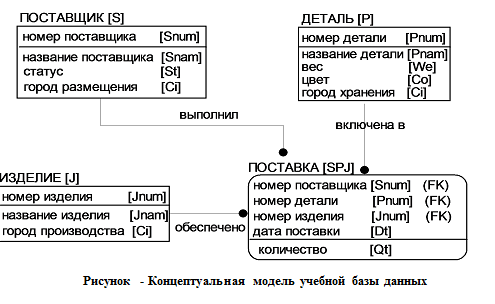

Вводная
Цель работы
Ознакомиться с возможностями СУБД MySQL и создать с его помощью базу данных, набор таблиц в ней и заполнить таблицы данными для последующей работы.
Изучить набор команд языка SQL, связанный с созданием базы данных, созданием, модификацией структуры таблиц и их удалением, вставкой, модификацией и удалением записей таблиц.
Содержание работы и методические указания к ее выполнению
Изучить
Список команд:- create database DB_name создание базы данных
- Use database выбор существующей базы данных
- close database закрытие файлов текущей базы данных
- drop database удаление базы данных
- create table создание таблицы базы данных
- alter table модификация структуры базы данных
- drop table удаление таблицы базы данных
- insert добавление одной или нескольких строк в таблицу
- delete удаление одной или нескольких строк из таблицы
- update модификация одной или нескольких строк таблицы
- LOAD DATA INFILE загрузка данных в таблицы из файла
Создать базу данных.
Создание базы данных в MySQL производится с помощью утилиты mysqladmin. Изначально существует только БД mysql для администратора и БД test, в которую может войти любой пользователь и которая по умолчанию пуста. Приведенный ниже пример иллюстрирует создание базы данных.
Mysql/bin>mysqladmin -u root -p create data_name
Enter password:******
Database "data_name" created.
mysqlbin>
Где data_name – имя создаваемой БД. Проверить, что БД создана можно ранее рассмотренной командой Show
databases или утилитой mysqlshow.По умолчанию, root имеет доступ ко всем базам данных и таблицам. Перейти в созданную базу данных можно, используя команду mysql Use database.
Mysql/bin>mysql -u root -p data1 Enter password:****** Welcome to MySQL monitor.Или, находясь в другой базе данных, например в mysql ввести команду:
mysql>use data1 Database changed.Создать базу данных можно непосредственно находясь в клиентском приложении MySQL, вводом команды:
CREATE DATABASE Base_nameГде Base_name имя создаваемой базы данных. В созданной базе можно создавать таблицы и вводить информацию. Указанные операции можно выполнить, используя специализированное программное обеспечение, например MySQL-Front, Mysql Workbench или SQLyog.
Необходимо указать:
- Имя;
- Хост;
- Пароль;
- Порт;
- Имя БД (при необходимости).
После задания активной БД можно с помощью средств, предоставляемых программой изменять структуру БД, вводить данные, задавать ключевые поля. Помимо этого можно в специально отведенном окне напрямую вводить инструкции, используя синтаксис языка SQL.
Средствами языка SQL необходимо создать четыре таблицы в базе данных
Используйте команду CREATE TABLE. Для таблицы products:CREATE TABLE products (
id INT NOT NULL AUTO_INCREMENT PRIMARY KEY,
name varchar(20) NOT NULL,
city varchar(20) default NULL
);
Значками /* */ - выделяются комментарии в тексте запроса.При создании таблиц выполнить такую реализацию, чтобы она отражала структуру таблиц, указанных ниже (таблицы products, shippers, supplies, details ) и должны быть наложены следующие ограничения:
- поля номер_поставщика, номер_детали, номер_изделия во всех таблицах имеет тип INTEGER
- поля рейтинг, вес и количество имеют целочисленный тип (integer);
- поля фамилия, город (поставщика, детали или изделия), название (детали или изделия) имеют символьный тип и длину 20 (varchar(20));
Обеспечить ссылочную целостность вашей базы данных при помощи FOREIGN KEY
Ссылочная целостность—это состояние реляционной базы данных в которой записи не могут ссылаться на несуществующие записи в этой базе данных.
FOREIGN KEY—особый вид ограничения(constraint) MySQL, которое позволяет предотвратить нарушение ссылочной целостности при удалении/изменении информации в таблицах предках. Поддержка FOREIGN KEY поддерживается только для таблиц типа InnoDB
Пример нарушения ссылочной целостности
Пусть существуют две таблицы. Catalogs, являющаяся таблицей-предком, содержащие в себе упоминания о категориях товаров в интернет магазине и таблица products являющаяся таблицей-потомком, со всеми товарами этого магазина
mysql> SELECT * FROM catalogs; +------------+-------------------------------------+ | id_catalog | name | +------------+-------------------------------------+ | 1 | Процессоры | | 2 | Материнские платы | | 3 | Видеоадаптеры | | 4 | Жёсткие диски | | 5 | Оперативная память | +------------+-------------------------------------+ mysql> SELECT * FROM products; +------------+-------------------------------+------------+ | id_product | name | id_catalog | +------------+-------------------------------+------------+ | 1 | Celeron 1.8 | 1 | | 2 | Celeron 2.0GHz | 1 | | 3 | Celeron 2.4GHz | 1 | | 4 | Celeron D 320 2.4GHz | 1 | | 5 | Celeron D 325 2.53GHz | 1 | | 6 | Celeron D 315 2.26GHz | 1 | | 7 | Intel Pentium 4 3.2GHz | 1 | | 8 | Intel Pentium 4 3.0GHz | 1 | | 9 | Intel Pentium 4 3.0GHz | 1 | | 10 | Gigabyte GA-8I848P-RS | 2 | | 11 | Gigabyte GA-8IG1000 | 2 | | 12 | Gigabyte GA-8IPE1000G | 2 | | 13 | Asustek P4C800-E Delux | 2 | | 14 | Asustek P4P800-VM\L i865G | 2 | | 15 | Epox EP-4PDA3I | 2 | | 16 | ASUSTEK A9600XT/TD | 3 | | 17 | ASUSTEK V9520X | 3 | | 18 | SAPPHIRE 256MB RADEON 9550 | 3 | | 19 | GIGABYTE AGP GV-N59X128D | 3 | | 20 | Maxtor 6Y120P0 | 4 | | 21 | Maxtor 6B200P0 | 4 | | 22 | Samsung SP0812C | 4 | | 23 | Seagate Barracuda ST3160023A | 4 | | 24 | Seagate ST3120026A | 4 | | 25 | DDR-400 256MB Kingston | 5 | | 26 | DDR-400 256MB Hynix Original | 5 | | 27 | DDR-400 256MB PQI | 5 | | 28 | DDR-400 512MB Kingston | 5 | | 29 | DDR-400 512MB PQI | 5 | | 30 | DDR-400 512MB Hynix | 5 | +------------+-------------------------------+------------+
При удалении категории из таблицы catalogs, в таблице products останутся товары которые не привязаны ни к одной из категорий, что может повлечь массу проблем для магазина.
mysql> DELETE FROM catalogs WHERE name = 'Процессоры';
mysql> SELECT * FROM catalogs;
+------------+-------------------------------------+
| id_catalog | name |
+------------+-------------------------------------+
| 2 | Материнские платы |
| 3 | Видеоадаптеры |
| 4 | Жёсткие диски |
| 5 | Оперативная память |
+------------+-------------------------------------+
mysql> SELECT * FROM products WHERE id_catalog = 1;
+------------+------------------------+------------+
| id_product | name | id_catalog |
+------------+------------------------+------------+
| 1 | Celeron 1.8 | 1 |
| 2 | Celeron 2.0GHz | 1 |
| 3 | Celeron 2.4GHz | 1 |
| 4 | Celeron D 320 2.4GHz | 1 |
| 5 | Celeron D 325 2.53GHz | 1 |
| 6 | Celeron D 315 2.26GHz | 1 |
| 7 | Intel Pentium 4 3.2GHz | 1 |
| 8 | Intel Pentium 4 3.0GHz | 1 |
| 9 | Intel Pentium 4 3.0GHz | 1 |
+------------+------------------------+------------+
Это явление называется нарушением ссылочной целостности
На ссылочную целостность базы данных как правило оказывают четыре типа изменений:
- Добавление новой записи в таблице-потомке. Например добавление новой товарной позиции в таблицу products. Важно заметить что важную роль играет изменение именно таблицы-потомка, т.к изменение таблицы-предка (catalogs) не приведет к нарушению ссылочной целостности, т.к наличие пустой категории товаров допустимо
- Обновление внешнего ключа в таблице-потомке. Эта ситуация похожа на первую и может произойти при изменении у товара ссылки на несуществующий раздел каталога, например товар с id_catalog равным 50
- Удаление записи из таблицы-предка. Эта ситуация рассмотрена выше.
- Изменение записи в таблице-предке. Эта ситуация отличается от рассмотренной выше тем что категория каталога не удаляется а принимает новый id
Обработка изменений при помощи FOREIGN KEY
Для того что бы контролировать ссылочную целостность в базе данных необходимо что бы таблицы были связаны при помощи конструкции FOREIGN KEY, которая имеет вид:
FOREIGN KEY [index_name] (index_col_name, …)
REFERENCES tbl_name (index_col_name,…)
[ON DELETE {RESTRICT | CASCADE | SET NULL | NO ACTION | SET DEFAULT}]
[ON UPDATE {RESTRICT | CASCADE | SET NULL | NO ACTION | SET DEFAULT}]
FOREIGN KEY — используется при создании/изменении таблиц-потомков таблицах. В рамках данной статьи FOREIGN KEY, следует использовать в таблице products. Данная конструкция позволяет задать в таблице-потомке внешний ключ с именем index_name на столбцах таблицы которые перечисляется в круглых скобках. Можно использовать один или несколько столбцов.
Ключевое слово REFERENCES задаёт таблицу-предка tbl_name на которую будет ссылаться внешний ключ. Поля таблицы-предка задаются в круглых скобках, один или несколько.
Необязательные конструкции ON DELETE и ON UPDATE, определяют поведение MySQL при удалении/обновлении записей из таблицы-предка.
Допустимые параметры для ключевых слов ON DELETE и ON UPDATE:
- RESTRICT — Если в таблице-потомке существуют записи ссылающиеся на первичный ключ таблицы-предка то при удалении или обновлении записей с этим первичным ключом в таблице предке, будет возвращена ошибка. Ошибка будет возвращаться до тех пор пока не останется ни одной ссылки в таблице потомке. В MySQL данный параметр означает то же самое что и NO ACTION
- CASCADE — При удалении/обновлении записей в таблице-предке, будут так же обновлены/удалены записи из таблицы-потомка с существующим первичным ключом
- SET NULL — При удалении/обновлении записей в таблице-предке, записи из таблицы-потомка с существующим первичным ключом будут обновлены на NULL
- NO ACTION — При удалении/обновлении записей в таблице-предке, записи из таблицы-потомка с существующим первичным ключом изменены не будут. В MySQL данный параметр означает то же самое что и RESTRICT
- SET DEFAULT — Это действие зарезервировано но не обрабатывается в InnoDB
Добавление для таблицы products из примера статьи конструкции:
ALTER TABLE products ADD CONSTRAINT fk_catalog
FOREIGN KEY (id_catalog) REFERENCES catalogs (id_catalog)
ON DELETE CASCADE
ON UPDATE CASCADE
приведет к тому что изменения таблицы catalogs приведет к автоматическому изменению таблицы products.
Загрузка данных вручную
(, используя команду insert into;) После создания пустых таблиц их необходимо наполнить данными. Вводить данные в нее можно несколькими способами (ознакомьтесь со всеми, выберите один для исопльзования):Пример ввода данных вручную (команда INSERT):
insert into products (name, city)values ('Жесткий диск','Париж');
или
insert into products values (NULL,'Жесткий диск','Париж');//т.е в случае если вы вставляете данные во все поля таблицы то их перечислять не обязательно.
Таким образом SQL инструкция имеет следующий вид
INSERT INTO table_name (id, name) VALUES ('id_value', 'name_value');
Записать и выполнить совокупность запросов для занесения нижеприведенных данных в созданные таблицы
insert into имя_таблицы [(поле [,поле]...)] values (константа [,константа]...)
Загрузить данные из текстового файла
Это является более предпочтительным, особенно если нужно ввести несколько тысяч записей.Синтаксис команды LOAD DATA INFILE.
DATA [LOW_PRIORITY] [LOCAL] INFILE 'file_name.txt' [REPLACE | IGNORE]
INTO TABLE tbl_name
[FIELDS
[TERMINATED BY 't']
[OPTIONALLY] ENCLOSED BY '']
[ESCAPED BY '' ]]
[LINES TERMINATED BY 'n']
[IGNORE number LINES]
[(col_name,...)]
Пример:
LOAD DATA LOCAL INFILE '/MyDocs/categories.txt' REPLACE
INTO TABLE category FIELDS TERMINATED BY ';' OPTIONALLY ENCLOSED
BY '\"' LINES TERMINATED BY '\n'
В данном случае файл categories.txt находится на машине под управлением MS Windows, в каталоге
C:\MyDocs.
Обратите внимание на UNIX стиль написания пути. Слово
- REPLACE В SQL запросе означает, что необходимо замещать записи с совпадающими значениями ключей.
- INTO TABLE указывает имя таблицы, куда будут импортированы данные.
- FIELDS TERMINATED BY ';' указывает разделители полей, порядок полей должен быть таким же, как и в таблице назначения,
- OPTIONALLY ENCLOSED BY '\"' указывает, что поля VARCHAR взяты в двойные кавычки
- LINES TERMINATED BY '\r' указывает разделители строк.
Программно
Можно использовать утилиту mysqlimport для загрузки данных из текстового файла, или использовать программы MySQL-Front, Mysql Workbench или SQLyog.Данные для создания базы
Таблица поставщиков (shippers aka S)
| Hомеp поставщика | Фамилия | Рейтинг | Город |
| 1 | Смит | 20 | Лондон |
| 2 | Джонс | 10 | Париж |
| 3 | Блейк | 30 | Париж |
| 4 | Кларк | 20 | Лондон |
| 5 | Адамс | 30 | Афины |
Таблица деталей (details aka P)
| Номер детали | Название | Цвет | Вес | Город |
| 1 | Гайка | Красный | 12 | Лондон |
| 2 | Болт | Зеленый | 17 | Париж |
| 3 | Винт | Голубой | 17 | Рим |
| 4 | Винт | Красный | 14 | Лондон |
| 5 | Кулачок | Голубой | 12 | Париж |
| 6 | Блюм | Красный | 19 | Лондон |
Таблица изделий (products aka J)
| Номер изделия | Название | Город |
| 1 | Жесткий диск | Париж |
| 2 | Перфоратор | Рим |
| 3 | Считыватель | Афины |
| 4 | Принтер | Афины |
| 5 | Флоппи-диск | Лондон |
| 6 | Терминал | Осло |
| 7 | Лента | Лондон |
Таблица поставок (supplies aka SPJ)
| Номер поставщика | Номер детали | Номер изделия | Количество |
| 1 | 1 | 1 | 200 |
| 1 | 1 | 4 | 700 |
| 2 | 3 | 1 | 400 |
| 2 | 3 | 2 | 200 |
| 2 | 3 | 3 | 200 |
| 2 | 3 | 4 | 500 |
| 2 | 3 | 5 | 600 |
| 2 | 3 | 6 | 400 |
| 2 | 3 | 7 | 800 |
| 2 | 5 | 2 | 100 |
| 3 | 3 | 1 | 200 |
| 3 | 4 | 2 | 500 |
| 4 | 6 | 3 | 300 |
| 4 | 6 | 7 | 300 |
| 5 | 2 | 2 | 200 |
| 5 | 2 | 4 | 100 |
| 5 | 5 | 5 | 500 |
| 5 | 5 | 7 | 100 |
| 5 | 6 | 2 | 200 |
| 5 | 1 | 4 | 100 |
| 5 | 3 | 4 | 200 |
| 5 | 4 | 4 | 800 |
| 5 | 5 | 4 | 400 |
| 5 | 6 | 4 | 500 |
Завершение работы
Убедиться в успешности выполненных действий. При необходимости исправить ошибки.5. Выполнить модификацию структуры таблицы supplies (SPJ), добавив поле с датой поставки. Убедиться в успешности выполненных действий. При необходимости исправить ошибки (команда Alter table).
6. Уничтожить созданные таблицы, предварительно сохранив инструкции для восстановления структуры БД и информационного наполнения, используя средства работы СУБД. Убедиться в успешности выполненных действий.
7. Выполнить необходимые действия, написав и выполнив соответствующие запросы для модификации таблиц, чтобы структура соответствовала концептуальной модели учебной базы данных (рисунок ниже). Убедиться в успешности выполненных действий. При необходимости исправить ошибки.
Проверить результат заполнения таблиц, написав и выполнив простейший запрос:
SELECT * FROM имя_таблицыПри наличии ошибок выполнить корректировку, исправив либо удалив ошибочные строки таблиц
Вопросы
- В каких режимах возможно создание базы данных?
- Какие типы данных допустимы при создании таблицы?
- Как выполнить создание таблицы средствами СУБД?
- Как выполнить создание таблицы средствами языка SQL?
- Как разделяются операторы SQL в случае нескольких операторов в запросе?
- Каким образом выполнить простейшие операции вставки строк данных в таблицу средствами SQL?
- Каким образом выполнить простейшие операции модификации строк таблицы средствами SQL?
- Каким образом выполнить просмотр таблицы?
- Как получить информацию о структуре таблицы в рамках СУБД MySQL?